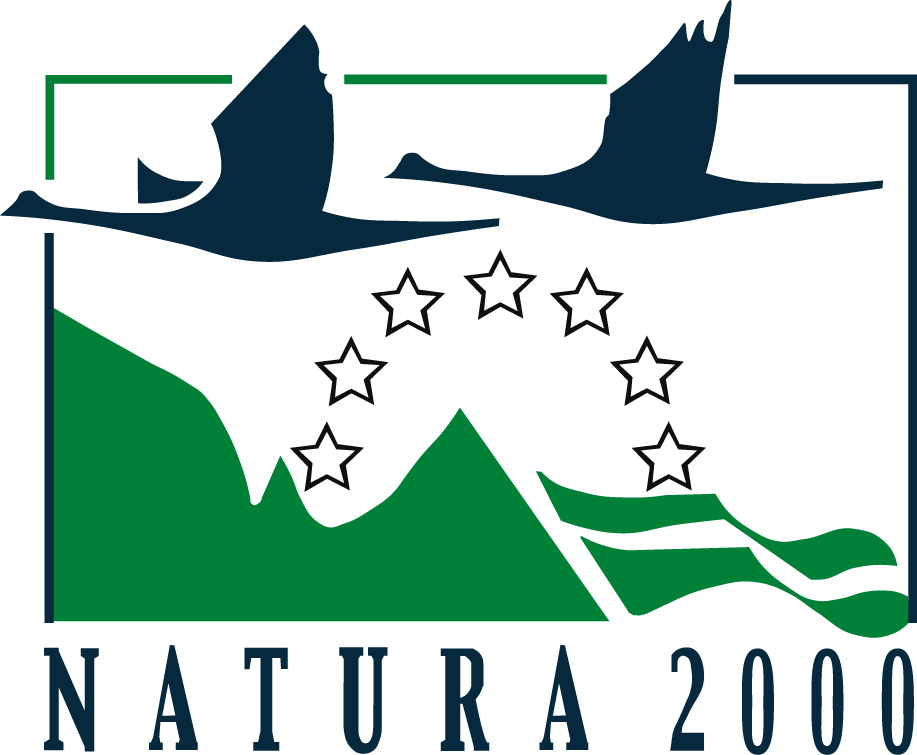

Información General
La Red Natura 2000 es una red de áreas de conservación diseñadas por la Comisión Europea para la protección de la biodiversidad en la Unión Europea. Consta de Zonas Especiales de Conservación (ZEC), designadas de acuerdo con la Directiva Hábitat, así como de Zonas de Especial Protección para las Aves (ZEPA) establecidas en virtud de la Directiva Aves.

Su finalidad es asegurar la supervivencia a largo plazo de las especies y los hábitats más amenazados de Europa, contribuyendo a detener la pérdida de biodiversidad ocasionada por el impacto adverso de las actividades humanas. Es el principal instrumento para la conservación de la naturaleza en la Unión Europea.
Esta red de espacios coherentes se fundamenta en la política de conservación de la naturaleza de la Unión Europea según su Directiva de Hábitats, que complementa la Directiva de Aves de 1979.
La red consolida en Europa un ecosistema y una gestión en red de espacios protegidos de interés comunitario. Este enfoque, ya evocado y perseguido por la Directiva de Aves en 1979.